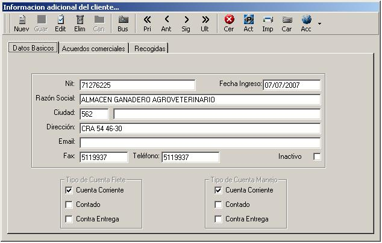
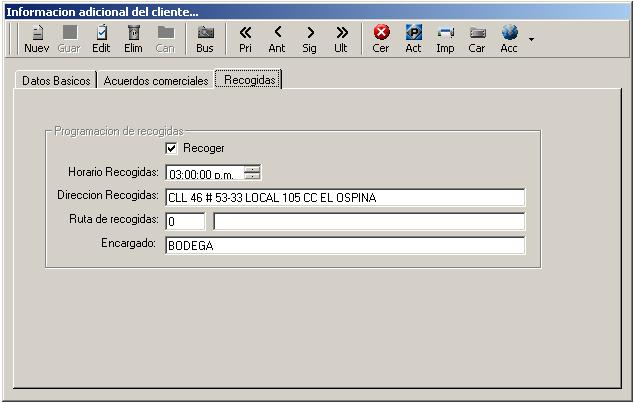

|
Introduccion
La informacion de clientes corresponde a los datos basicos, comerciales, operativos
y de la negociacion del cliente de la empresa,
esta informacion no contiene parametros contables insidentes, unicamente
datos de liquidacion e informacion de operaciones.
para ingresar el cliente solo es necesario tener la informacion completa de todos los parametros y utilizar
los botones estandar de la barra de herramientas (Nuevo, Editar, Guardar, Eliminar etc), cabe acalarar
que los conceptos de cliente, cuenta y tercero, son diferentes, consulte este link
para clarificar el concepto. para ingresar a clientes desde se accede desde el menu principal
- Menu [Complementos]
- Menu [Archivos Principales]
- Menu [Clientes]

La pantalla inicial requiere el ingreso de informacion basica.
- Nit: El ingreso del nit debe ser sin el digito de verificacion ya que el programa lo calcula
- Nombre: Este nombre puede el un dato con el que se identifique el cliente, no necesariamente
la razon social o el nombre fiscal
- Ciudad: si no conocemos el codigo de la ciudad podemos presionar F2 y nos trae una ayuda para identificarla
- Direccion: Direccion de las oficina principal
- e-mail: correo principal del cliente
- Fax, Telefono: Numeros
- Inactivo: Aqui podemos parametrizar si algun cliente esta inactivo o no puede ser utilizado,
para esta funcion es necesario un permiso especial
- Cuentas de flete: Cuentas permitidas para la liquidacion de los fletes
- Cuentas de manejo: Cuentas permitidas para la liquidacion de los manejos

Pestaña de acuerdos comerciales, con esta informacion el sistema liquida los fletes y manejos, ademas, controla
toda la informacion relacionada con el cliente
- Cupo credito: Es el tope de credito o deuda que puede tener cada cliente con la empresa
- Dto Pie Fac y Ant de: Este es un descuento que tienen los cuentos para
pagos realizados antes de una fecha. En la casilla de "Dto pie Fac" se especifica
el porcentaje del descuento y en "Ant De" se especifican los dias maximo que se puede
demorar en el pago para tomarselo.
- Dto Fin: Es el descuento financiero que tiene el cliente, este descuento sera fijo
sin importar la fecha de pago
- Plazo: Plazo que tiene el cliente para pagar las facturas antes de entrar a cartera vencida
- Manejo: Dato para especificar el porcentaje del valor declarado del cual
se cobrara la cuota de manejo o seguro
- Min Uni: En este campo se especifica el valor minimo por unidad que se cobrar de manejo, en el
caso de que el valor de manejo sea inferior se colocara este precio
- Man Kilo y Dcto: Con esta informacion el sistema liquidara todos los fletes automaticamente por los
parametros establecidos.
- Man Uni y Dcto: Igual que en kilos pero por unidad
- Adicional: Liquidacion por tope y adicional
- Carta porte: Aqui establecemos mediante los botones de opcion si el cliente devulve siempre carta
porte o no o si es opcional
- Lista de precios: En esta parte podemos especificar la lista con que el cliente liquidara
- Observaciones: Campo para cualquier tipo de informacion adicional
- Tipos de transporte: Mediante los botones de seleccion establecemos los tipos de servicio
que utiliza el cliente

En esta parte del ingreso de clientes, podemos establecer parametros del cliente respecto a las
recogidas.
- Recoger: En este campo de seleccion definimos si al cliente se le recoge mercancia o no
- Horario Recogida: Hora en que se realizan las recogidas, aplica para clientes que tienen recogidas fijas
en periodos, esta hora se puede cambiar en el momento del anuncio en las recogidas
- Direccion Recogidas: Direccion en la cual se le recoge mercancia a los clientes.
- Ruta de recogida: Rutas locales para la programacion de recogidas
- Encargado: Personal encargado de despachar la mercancia donde el cliente
Para ver un listado de los acuerdos comerciales del cliente, ingrese desde el menu principal
- Menu [informes, reportes y listados]
- Menu [Listados]
- Menu [Control]
- Menu [Acuerdos comerciales]
|